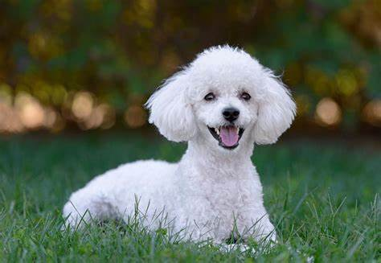

Perro 1
Los perros bebés son los animales más tiernos y bellos del mundo; pero antes de que llegaran a ser los más bonitos y tiernos, fueron salvajes, estos han jugado un papel importante en la historia de la civilización humana y se encuentran entre los primeros animales domesticados junto a los gatos. /p>

Perro 2
Eran importantes en las sociedades de cazadores-recolectores como cazadores aliados y guardaespaldas contra los depredadores.

Perro 3
Cuando el ganado fue domesticado hace unos 8.000 años, los perros sirvieron como pastores y guardianes de ovejas, cabras y ganado.